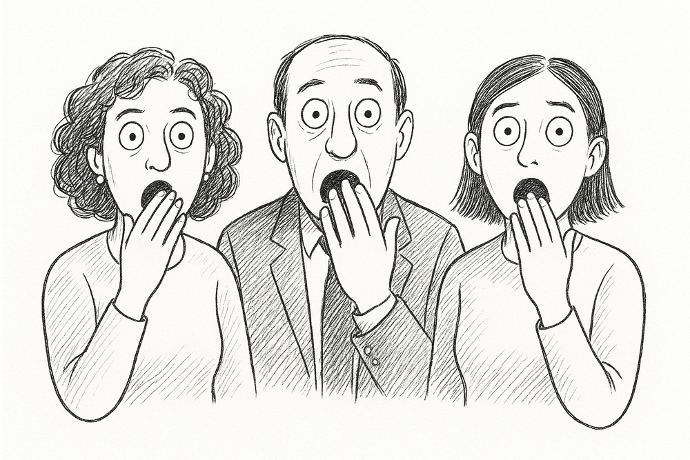

potty-mouth 🧼
A profanity filter for AI coding assistants. Say something rude to Claude Code, Codex CLI, or Cursor, and the prompt never reaches the model. Mostly harmless.
npm install -g @ianderrington/potty-mouth
potty-mouth installWhat it actually does
Every prompt-submit hook in these tools receives your text on stdin before the model sees anything. potty-mouth checks it against a local word table — if something matches, the prompt is refused with a short message and never reaches the model at all. No network calls, no third-party service, no LLM in the block decision itself. Just a regex lookup against a JSON file on your own machine.
Features
Three targets, one engine
Claude Code, Codex CLI, and Cursor are all supported through one shared decision engine — detection, bypass, and the kill switch behave identically regardless of which tool is asking.
A growable table
Add your own words (or let the AI add ones it notices slipped through) — every addition is tagged by who added it, and you can always see and remove anything.
Say it on purpose
Type I_WANT_TO_SWEAR anywhere in a prompt to deliberately override the filter for that one message — tracked separately from blocks.
A real kill switch
If a block ever fires despite the bypass phrase being present — which should be structurally impossible — potty-mouth disables itself everywhere and asks you to file a bug report.
Never touches non-conversation content
Background-task reports and anything over 4000 characters are skipped entirely — a human swearing at an assistant is always short.
Clean up afterward, too
The same word table can scan and rewrite existing files or transcripts, with --dry-run and --backup.
FAQ
How do I stop Claude Code (or Codex, or Cursor) from responding to rude prompts?
npm install -g @ianderrington/potty-mouth && potty-mouth install — pass --target codex or --target cursor for the other tools. It blocks the prompt at submit time, before the model ever sees it.
Does it send my prompts anywhere?
No. Everything runs locally — a regex table lookup against a JSON file in ~/.potty-mouth/. No network calls, no third-party service, no telemetry.
What if I actually need to swear at it?
Type I_WANT_TO_SWEAR anywhere in that one prompt. It goes through untouched, and the model is told it happened on purpose.
Will it block a big pasted log file just because one word matches?
No — anything over 4000 characters is never scanned, and recognized system envelopes (background-task notifications, etc.) are skipped entirely.
Is this a real filter or a joke package?
Both. The bit is real — it will absolutely refuse to help until you rephrase — but the engineering underneath isn't a joke: 98 tests, one shared decision engine across three tools, a kill switch that disables itself if it ever contradicts its own bypass logic.